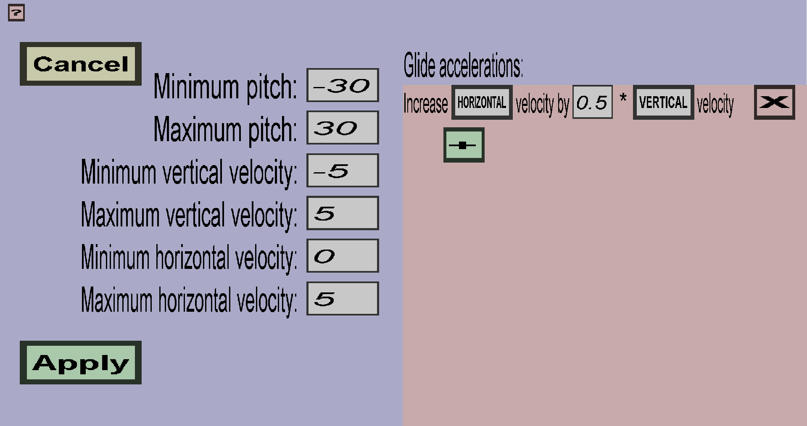

This menu can be used to modify a single glide velocity modifier of a custom elytra. It consists of several requirements and any number of accelerations. This menu should look like this:
The requirements determine in which circumstances the accelerations will be activated. If any of the requirements is not satisfied, the accelerations will not be activated. One way to use the requirements is to only activate the accelerations while the player is looking up, but there are many more ways in which they can be used.
The pitch is the angle at which the player is looking. A pitch of 90 degrees indicates that the player is looking straight to the sky and a pitch of -90 degrees indicates that the player is looking straight to the ground. A pitch of 0 degrees indicates that the player is looking at the horizon. The accelerations will only be activated while the pitch of the player is between the Minimum pitch and the Maximum pitch. The default values are -30 degrees and 30 degrees, which requires the players pitch to be between -30 degrees and 30 degrees. This is also required for vanilla elytra to function properly.
The vertical velocity is the speed at which the player is falling/descending or climbing/ascending. It is given in meters/tick, where 1 meter per tick is basically 20 blocks per second (quite fast). A negative vertical velocity indicates that the player is descending/falling and a positive velocity indicates that the player is ascending/climbing. The accelerations will only be activated if the vertical velocity of the player is between Minimum vertical velocity and Maximum vertical velocity. The most straightforward usecase for this requirement is to activate the accelerations only when the player is ascending or only when the player is descending.
The horizontal velocity is the speed at which the player is moving forward. It is given in meters/tick, where 1 meter per tick is basically 20 blocks per second. Unlike the vertical velocity, the horizontal velocity is never negative. The accelerations will only be activated if the horizontal velocity of the player is between the Minimum horizontal velocity and the Maximum horizontal velocity. This requirement is especially useful for forward accelerations, to prevent the player from going too fast.
The accelerations will accelerate the player in some direction. For instance, it can increase or decrease the speed of the player. It could also be used to help the playing with ascending. Each acceleration will be executed once per tick (so 20 times per second) if all requirements are satisfied. Each acceleration has a source axis, a target axis, and a factor and each one is written down as Increase target axis velocity by factor * source axis velocity.
In the example shown in the screenshot, the horizontal velocity is increased by 0.5 * the vertical velocity, which will happen 20 times per second. When the player is falling, this would dramatically slow the player down because the vertical velocity is negative while falling. When the player is climbing, this would instead speed the player up. Note that 0.5 is a pretty large value because the accelerations are executed 20 times per second.